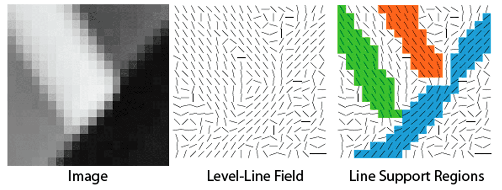
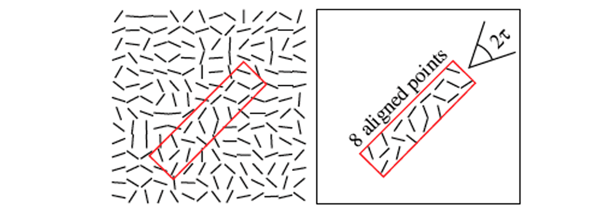
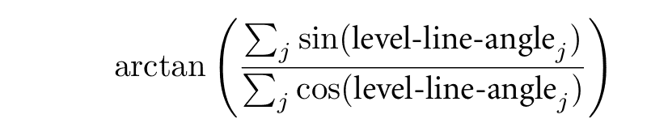
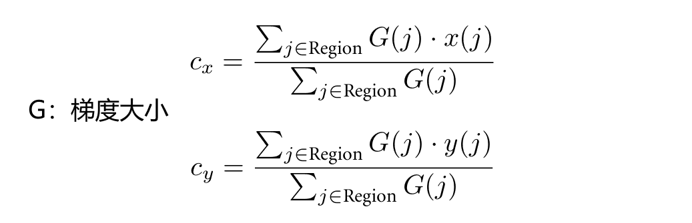
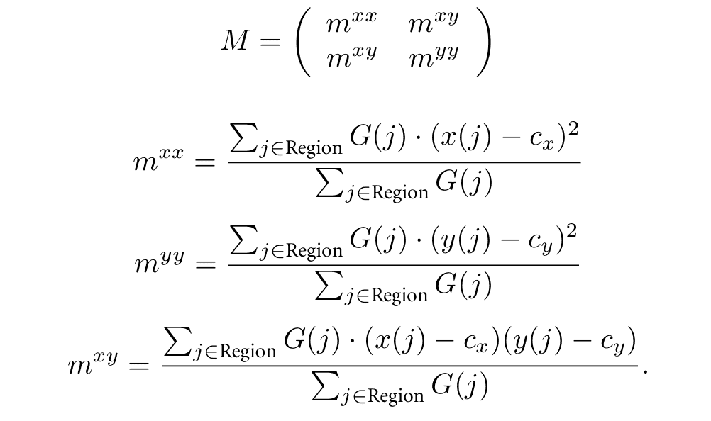
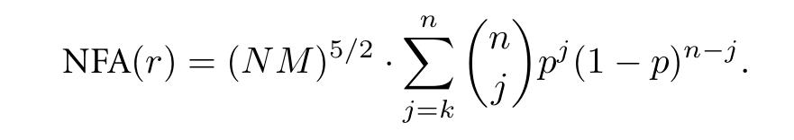
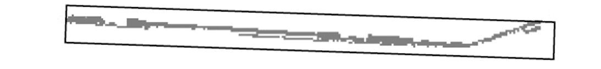
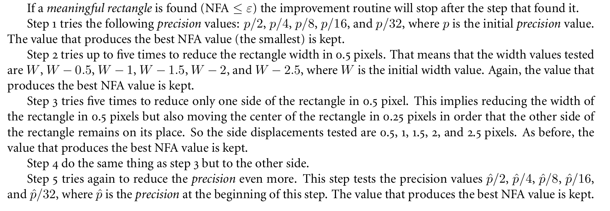

边缘检测方法：LSD
介绍一种边缘检测方法：LSD，来自以下文章，它可以在 OpenCV 中使用，具体用法在另一篇笔记中。
- LSD: a Line Segment Detector
首先是总体逻辑先过一遍，先不纠结各个步骤具体是如何做的。
总体流程
流程一：先对图像求梯度，得到方向，然后把大致接近的方向组合在一起。如下图所示（先不纠结如何实现），便于讲述，每一组叫做 Line Support Region。

流程二：然后对每个组合求一个最小外接矩形，看看里面的点有多少是和矩形的方向一致的，比如下图，就只有 8 个点是和矩形的方向一致的，这些点叫做 aligned points。

流程三：判断上面说的符合矩形方向的点数量够不够，即这个矩形是否可以作为最终直线。
流程四：如果不够则把矩形删掉一个点，继续上述操作。
流程一：求解 Line Support Region
每个点梯度计算，有大小和方向。梯度小的点往往出现在平滑区域，或者仅仅是噪声。即不是我们想要的直线，为了避免干扰，梯度值小于 \(\rho\) 的像素会被标记，不参与后面的计算。
然后开始依次遍历那些未标记的点，遍历顺序是梯度从大到小，其中作者用的桶排序，也符合常规做法。
假设现在从像素点 \(p\) 开始找新的 Line Support Region，先计算 \(p\) 的八联通这个八个点的梯度方向是否和 当前 Line Support Region 的方向 在容忍度 \(\tau\) 内，其中论文中 \(\tau = 22.5 \degree = \pi / 8\)。
当前 Line Support Region 的方向计算如下，即把里面的像素点各自 \(\sin\) 和 \(\cos\) 求和，然后求 \(\arctan\)。

如果符合条件，就加入那个点，并且做一个标记，然后重复上面步骤。
流程二：求解最小矩形及其 aligned points 数量
求最小外接矩形这是经典问题，这里不赘述。这里快速提一下，如下图是矩阵中心：

这个矩形的方向则是用轮廓的矩，求下面的矩阵的最小特征值对应的特征向量，就是矩形的方向：

然后 aligned points 数量也很朴素：遍历比较呗，比较当前遍历的点的梯度方向和上面的矩形方向是否在容忍度 \(\tau\) 内。
虽然我们在流程一中加入点的时候，考虑的容忍度也是 \(\tau\)，但是这里比较的是最终矩形的方向，而不是流程一中逐渐更新的 Line Support Region 的方向（流程一中用 \(\arctan\) 计算的公式）。
流程三：判断矩形是否可以作为最终直线
作者用了一个叫做 NFA 的指标，这个指标在另一个方法 EDLines 中也会用到。
NFA, the Number of False Alarms，假阳性率，计算公式如下：

其中 \(N\) 和 \(M\) 是图片的大小，\(n\) 是当前矩形的像素数量，\(p\) 叫做精确度，默认值设为 \(\tau / \pi\)，\(k\) 是符合条件的像素点数量，而这个条件阈值就是 \(p\pi\)。
这个方法也叫做 Helmholtz principle，从上面公式也能看出是否能作为最终直线甚至和图像大小有关系。确实，同样长度的直线，在小图中可作为直线，但大图中可能还是偏短。
最后如果 \(NFA(r) \leq \epsilon\)，则认为这个矩形可以作为最终直线。论文中参数 \(\epsilon = 1\)。其参考了 2008 年的一篇文章：From Gestalt Theory to Image Analysis。
流程三番外：进一步判断矩形是否可以作为最终直线
作者提出用 NFA 进行评估有一个问题，如下图所示，如果前半部分是一个合理误差内的方向，后半部分是另一个相反的合理误差方向，最后会通过 NFA 检测：

然后作者就提出进一步判断，用符合常规的数量占比来判断，如下图所示，论文使用的阈值是 \(D = 0.7\)，即需要 \(d > 0.7\)。但说实话我感觉好像还是没有解决问题啊，暂时跳过去吧，这些都是细节中的细节，实在不行看 OpenCV 源码...
流程四：不符条件则分割矩形
如果矩阵不符合要求，则按照如下步骤进行，一旦有一个步骤发现 NFA 值满足要求，那么就停止：缩小精确度 \(p\)、减小矩形宽度、减小矩形一边的长度、减小另一边的程度、进一步缩小精确度 \(p\)。

如果最后矩形过小也会被丢弃。